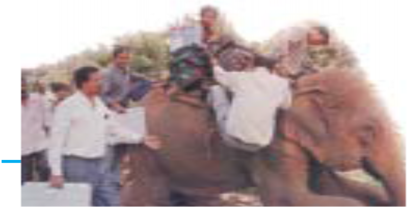

Social and Political Life 28
Unit Two
29
Parliament and
The Making of Laws
Teacher’s Note
This is a continuation of the theme of government that has already been dealt with in the Class VI and VII textbooks. Hence, a recap of ideas is important especially those related to elections, representation and participation. These ideas can be made more clear to students through bringing in actual examples into the classroom. Newspaper and TV reports could be used to facilitate this.
The first chapter discusses some of the functions of Parliament. The ways in which these connect to the idea of parliamentary democracy need to be emphasised. Hence it is important to explain the critical role played by citizens and allow students to air views regarding this. At times students might be cynical about the political process and your role as a teacher is not to dismiss or agree with this cynicism but rather redirect it towards what the Constitution intends.
The second chapter is on understanding laws. Children have little exposure to laws. Therefore, they would require more examples from a familiar context. It is through this they can figure out that laws are meant to apply in an equitable manner. The chapter begins by discussing how this rule of law emerged and the ways in which the nationalists opposed the arbitrariness of British laws.
The storyboard contained in Chapter 4 portrays how a new law comes into being. The focus of this storyboard is not on the processes within Parliament. In contrast, the storyboard highlights the important role that people play in transforming an urgent social issue into law. In addition to the law already highlighted, it would be good to discuss another example of a new/contemplated law so that students can relate to the role of people in bringing this about.
The chapter ends with a section on unpopular laws. These refer to laws that often restrict the Fundamental Rights of certain populations. History provides us with examples of several groups that protest what they view as unjust laws. Bring in these examples into the classroom to discuss how a law can be unpopular. Allow students to research more examples in the Indian context and debate these in the classroom using the Fundamental Rights listed in Chapter 1 as their yardstick.
Social and Political Life 30
Chapter 3
We in India pride ourselves on being a democracy. Here we will try and understand the relation between the ideas of participation in decision-making and the need for all democratic governments to have the consent of their citizens.
It is these elements that together make us a democracy and this is best expressed in the institution of the Parliament. In this chapter, we will try to see how the Parliament enables citizens of India to participate in decision making and control the government, thus making it the most important symbol of Indian democracy and a key feature of the Constitution.
Parliament and
The Making of Laws
India, as we know, became independent on 15 August 1947. Preceding this was a long and difficult struggle in which many sections of society participated. People from various backgrounds joined the struggle and they were inspired by the ideas of freedom, equality and participation in decision making. Under colonial rule, the people had lived in fear of the British government and did not agree with many of the decisions that they took. But they faced grave danger if they tried to criticise these decisions. The freedom movement changed this situation. The nationalists began to openly criticise the British government and make demands. As far back as 1885, the Indian National Congress demanded that there be elected members in the legislature with a right to discuss the budget and ask questions. The Government of India Act 1909, allowed for some elected representation. While these early legislatures under the British government were in response to the growing demands of the nationalists, they did not allow for all adults to vote nor could people participate in decision making.

As you read in Chapter 1, the experience of colonial rule as well as the participation of different people in the struggle for freedom left little doubt in the minds of the nationalists that all persons in independent India would be able to participate in making decisions. With the coming of independence, we were going to be citizens of a free country. This did not mean that the government could do what it felt like, it meant that the government had to be sensitive to people’s needs and demands. The dreams and aspirations of the freedom struggle were made concrete in the Constitution of independent India that laid down the principle of universal adult franchise, i.e. that all adult citizens of the country have the right to vote.

31
What do you think the artist is trying to convey through the image of Parliament on the previous page?
The above photo shows a man reading instructions on how to use an Electronic Voting Machine (EVM). EVMs were used throughout the country for the first time in the 2004 general elections. The use of EVMs in 2004 saved around 1,50,000 trees which would have been cut to produce about 8,000 tons of paper for printing the ballot papers.

Chapter 3: Why Do We Need a Parliament?
Give one reason why you think there should be universal adult franchise.
Do you think there would be any difference if the class monitor was selected by the teacher or elected by the students? Discuss.
Social and Political Life 32

This photo shows election staff using an elephant to carry polling material and EVMs to polling stations located in difficult terrain.
People and their Representatives
The take-off point for a democracy is the idea of consent,
the desire, approval and participation of people. It is the decision of people that creates a democratic government and decides about its functioning. The basic idea in this kind of democracy is that the individual or the citizen is the most important person and that in principle the government as well as other public institutions need to have the trust of these citizens.
How does the individual give approval to the government? One way of doing so, as you read, is through elections. People would elect their representatives to the Parliament, then, one group from among these elected representatives forms the government. The Parliament, which is made up of all representatives together, controls and guides the government. In this sense people, through their chosen representatives, form the government and also control it.

The above idea of representation has been an important theme in your Class VI and VII Social and Political Life textbooks. You are familiar with how representatives are chosen at different levels of government. Let us recall these ideas by doing the following exercises.
Use the terms ‘constituency’ and ‘represent’ to explain who an MLA is and how the person gets elected?
Discuss with your teacher the difference between a State Legislative Assembly (Vidhan Sabha) and the Parliament (Lok Sabha).
From the list below, identify the work of a State government and that of a Central government.
The decision of the Indian government to maintain peaceful relations with China.
The decision of the Madhya Pradesh government to discontinue Board exams in Class VIII for all schools under this Board.
Introduction of a new train connection between Ajmer and Mysore.
Introduction of a new 1,000 rupee note.
Fill in the blanks with the following words.
universal adult franchise; MLAs; representative; directly
Democratic governments in our times are usually referred to as representative democracies. In representative democracies, people do not participate ……...............… but, instead, choose their ….............……..through an election process. These …….......….. meet and make decisions for the entire population. These days, a government cannot call itself democratic unless it allows what is known as ............................................ This means that all adult citizens in the country are allowed to vote.
You have read that most elected members whether in the Panchayat, or the Vidhan Sabha or the Parliament are elected for a fixed period of five years. Why do
we have a system where the representatives are elected for a fixed period and not for life?
You have read that people participate in other ways and not just through elections to express approval or disapproval of the actions of government. Can you describe three such ways through a small skit?
33
Chapter 3: Why Do We Need a Parliament?
1
2 3
The Parliament of India (Sansad) is the supreme law-making institution. It has two Houses, the Rajya Sabha and the Lok Sabha.
Rajya Sabha (Council of States), with a total strength of 245 members, is chaired by the Vice-President of India.
Lok Sabha (House of the People), with a total membership of 545, is presided over by the Speaker.
Created after 1947, the Indian Parliament is an expression of the faith that the people of India have in principles of democracy. These are participation by people in the decision-making process and government by consent. The Parliament in our system has immense powers because it is the representative of the people. Elections to the Parliament are held in a similar manner as they are for the state legislature. The Lok Sabha is usually elected once every five years. The country is divided into numerous constituencies as shown in the map on page 41. Each of these constituencies elects one person to the Parliament. The candidates who contest elections usually belong to different political parties.
With the help of the table below, let us understand this further.
Results of 8th Lok Sabha elections (1984) Political Party No. of MPs elected |
National Parties Bharatiya Janta Party (BJP) 2 |
Communist Party of India (CPI) 6 |
Communist Party of India (Marxist) (CPM) 22 |
Indian Congress Socialist (ICS) 4 |
Indian National Congress (INC) 404 |
Janata Party (JNP) 10 |
Lok Dal (LKD) 3 |
State Parties All India Anna DMK (AIADMK) 12 |
Dravida Munnetra Kazhagam (DMK) 2 |
All India Forward Block (FBL) 2 |
Indian Congress (J) (ICJ) 1 |
Jammu & Kashmir Conference (JKN) 3 |
Kerala Congress (J) (KCJ) 2 |
Muslim League (MUL) 2 |
Peasants and Workers Party of India (PWP) 1 |
Revolutionary Socialist Party (RSP) 3 |
Telugu Desam Party (TDP) 30 |
Independents 5 |
Grand Total 514 Note: The Lok Sabha elections were not held in Assam and Punjab during 1984. |
Use the table alongside to answer the questions below:
Who will form the government? Why?
Who will be present for discussions in the Lok Sabha?
Is this process similar to what you have read about in
Class VII?
The photograph on page 28 shows results from the 3rd Lok Sabha elections held in 1962. Use the photograph to answer the following questions:
Which state has the highest number of MPs in the Lok Sabha? Why do you think this is so?
Which state has the least number of MPs in the Lok Sabha?
Which political party has won the most seats in all
states?
Which party do you think will form the government? Give reasons why.
The above table gives you the results of the 13th Lok Sabha elections held in 1999. In these elections, the BJP got a large number of seats but still not enough to emerge as the majority party in the Lok Sabha. It, thus, had to form a coalition, the National Democratic Alliance (NDA), with other political parties who were its allies.
Results of 13th Lok Sabha elections (1999) Political Party No. of MPs elected National Parties |
Bharatiya Janata Party (BJP) 182 |
Bahujan Samaj Party (BSP) 1 4 |
Communist Party of India [Marxist] (CPM) 3 3 |
Indian National Congress (INC) 114 |
Janata Dal [United] (JD (U)) 21 |
Others 5 |
State Parties |
All India Anna DMK (AIADMK) 10 |
All India Trinamool Congress (AITC) 8 |
Biju Janata Dal (BJD) 10 |
Dravida Munnetra Kazhagam (DMK) 1 2 |
Indian National Lok Dal (INLD) 5 |
Nationalist Congress Party (NCP) 8 |
Pattali Makkal Katchi (PMK) 5 |
Rashtriya Janata Dal (RJD) 7 |
Shiv Sena (SHS) 1 5 |
Samajwadi Party (SP) 2 6 |
Telugu Desam Party (TDP) 2 9 |
Others 2 3 |
Registered (Unrecognised) Parties 10 |
Independents 6 |
Grand Total 543 |
Once elected, these candidates become Members of Parliament or MPs. These MPs together make up the Parliament. Once elections to the Parliament have taken place, the Parliament needs to perform the following functions:
To Select the National Government
The Parliament in India consists of the President, the Rajya Sabha and the Lok Sabha. After the Lok Sabha elections, a list is prepared showing how many MPs belong to each political party. For a political party to form the government, they must have a majority of elected MPs. Since there are 543 elected (plus 2 nominated) members in Lok Sabha, to have a majority a party should have at least half the number i.e. 272 members or more. The Opposition in Parliament is formed by all the political parties that oppose the majority party/coalition formed. The largest amongst these parties is called the Opposition party.
One of the most important functions of the Lok Sabha is to select the executive. The executive, as you read in Chapter 1, is a group of persons who work together to implement the laws made by the Parliament. This executive is often what we have in mind when we use the term government.
The Prime Minister of India is the leader of the ruling party in the Lok Sabha. From the MPs who belong to her party, the Prime Minister selects ministers to work with her to implement decisions. These ministers then take charge of different areas of government functioning like health, education, finance etc.
Often times in the recent past it has been difficult for a single political party to get the majority that is required to form the government. They then join together with different political parties who are interested in similar concerns to form what is known as a coalition government.
These two buildings of the Central Secretariat, the South Block and North Block were built during the 1930s. The photo on the left is of the South Block which houses the Prime Minister’s Office (PMO), the Ministry of Defence and the Ministry of External Affairs. The North Block is the photo on the right and this has the Ministry of Finance and the Ministry of Home Affairs. The other ministries of the Union Government are located in various buildings in New Delhi.
The Rajya Sabha functions primarily as the representative of the states of India in the Parliament. The Rajya Sabha can also initiate legislation and a bill is required to pass through the Rajya Sabha in order to become a law. It, therefore, has an important role of reviewing and altering (if alterations are needed) the laws initiated by the Lok Sabha. The members of the Rajya Sabha are elected by the elected members of the Legislative Assemblies of various states. There are 233 elected members plus 12 members nominated by the President.
To Control, Guide and Inform the Government
The Parliament, while in session, begins with a question hour. The question hour is an important mechanism through which MPs can elicit information about the working of the government. This is a very important way through which the Parliament controls the executive. By asking questions the government is alerted to its shortcomings, and also comes to know the opinion of the people through their representatives in the Parliament, i.e. the MPs. Asking questions of the government is a crucial task for every MP. The Opposition parties play a critical role in the healthy functioning of a democracy. They highlight drawbacks in various policies and programmes of the government and mobilise popular support for their own policies.
LOK SABHA
UNSTARRED QUESTION NO 2007 ANSWERED ON 30.11.2007 JUNK FOOD IN SCHOOLS
2007. SHRI SALARAPATTY KUPPUSAMY KHARVENTHAN
Will the Minister of WOMEN AND CHILD DEVELOPMENT be pleased to state:
whether the National Commission for Protection of Child Rights (NCPCR) has asked all State Governments to ban junk foods in schools and also for setting up of nutrition standards;
if so, the details thereof;
whether the Union Government has ensured the compliance of the above standards by the States; and
if so, the details thereof.
ANSWER
THE MINISTER OF STATE OF THE MINISTRY OF WOMEN AND CHILD DEVELOPMENT
(a) and (b) No, Sir. A letter was issued to the States by National Commission for Protection of Child Rights (NCPCR) to consider providing guidelines to schools to create a school nutrition policy.
(c) and (d) Does not arise.
Source: http://loksabha.nic.in
In the above question, what information is being sought from the Minister of Women and Child Development?
If you were a Member of Parliament (MP), list two
questions that you would like to ask.
The government gets valuable feedback and is kept on its toes by the questions asked by the MPs. In addition, in all matters dealing with finances, the Parliament’s approval is crucial for the government. This is one of the several ways in which the Parliament controls, guides and informs the government. The MPs as representatives of the people have a central role in controlling, guiding and informing Parliament and this is a key aspect of the functioning of Indian democracy.
Law-Making
Law-making is a significant function of the Parliament. We shall read about this in the next chapter.
The Parliament now has more and more people from different backgrounds. For example, there are more rural members as also members from many regional parties. Groups and peoples that were till now unrepresented are beginning to get elected to the Parliament.
Lok Sabha | Election Year | Voter Turnout (%) |
1st | 1951-52 | 44.87 |
4th | 1967 | 61.04 |
5th | 1971 | 55.27 |
6th | 1977 | 60.49 |
8th | 1984 | 63.56 |
10th | 1991 | 56.73 |
14th | 2004 | 58.07 |
There has also been an increase in political participation from the Dalit and backward castes and the minorities. Let us look at the following table that shows the percentage of the population who voted in Lok Sabha elections in different years.
It has been observed that representative democracy cannot produce a perfect reflection of society. There is a realisation that when interests and experiences separate us it is important to ensure that communities that have been historically marginalised are given adequate representation. With this in mind, some seats are reserved in the Parliament for SCs and STs. This has been done so that the MPs elected from these constituencies will be familiar with and can represent Dalit and Adivasi interests in Parliament.
Looking at this table would you say that people’s participation during the past 50 years has: decreased/increased/been stable after initial increase?
The above photo shows a few women Members of Parliament.
Why do you think there are so few women in Parliament?
Discuss.
Similarly, it has more recently been suggested that there should be reservation of seats for women. This issue is still being debated. Sixty years ago, only four per cent of MPs were women and today it is just above nine per cent. This is a small share when you consider the fact that half the population are women.
It is issues of this kind that force the country to ask certain difficult and often unresolved questions about whether our democratic system is representative enough. The fact that we can ask these questions and are working towards answers is a reflection of the strength and the faith that people in India have in a democratic form of government.
GLOSSARY
Approval: To give one’s consent to and be favourable towards something. In the context of this chapter, it refers both to the formal consent (through elected representatives) that Parliament has as well as the fact that it needs to continue to enjoy the people’s trust.
Coalition: A temporary alliance of groups or parties. In this chapter, it refers to the alliance formed by political parties after elections when no party has been able to get adequate seats to form a clear majority.
Unresolved: Situations in which there are no easy solutions to problems.
Exercises
Why do you think the nationalist movement supported the idea that all adults have a right to vote?
In this 2004 map of Parliamentary constituencies alongside, roughly identify the constituencies in your State. What is the name of the MP from your constituency? How many MPs does your state have? Why are certain constituencies
coloured green while others are coloured blue?
You have read in Chapter 1 that the ‘Parliamentary form of government’ that exists in India has three tiers. This includes the Parliament (central government) and the various State Legislatures (state governments). Fill in the following table with information on the various representatives from your area:
State Government | Central Government | |
Which political party/parties is/are currently in power? | ||
Who (name) is the current representative from your area? | ||
Which political parties currently form the Opposition? | ||
When were elections last held? | ||
When will the next elections be held? | ||
How many women representatives are there (from your state)? |